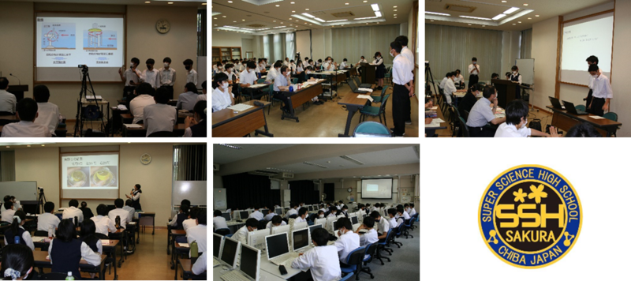

文字
背景
行間


SSH活動報告
SSH講座「チバニアンってなんだ？」
８月６日（金）ＳＳＨ講座「チバニアンってなんだ！」の一環で、市原市養老川流域を中心とした巡検に行ってきました。１年生６名、２年生９名が参加し、コロナ感染対策を徹底しつつ、現地で地層を確認しながら、そこに刻まれた地球環境の変遷について意欲的に学ぶことができました。また、ハンマー片手に化石採集をした際、見つけた物について担当教員に熱心に質問する姿は、旺盛な好奇心に溢れていました。現地を歩くことによって地形の起伏も体感でき、実り多い巡検となりました。


SSH生徒研究発表会（神戸）
8月4日（水）神戸国際展示場で行われたスーパーサイエンスハイスクール(SSH)生徒研究発表会に本校理数科3年生の西尾・中島・福井が参加し、「垂直軸水車を用いた潮流発電の効率化」という題でポスター発表をしました。感染症対策が徹底されており、飛沫防止シートによりポスターが見づらい状況となっておりましたが、生徒は説明用の水車をその場で紙を使って手作りするなど、より伝わりやすい工夫をしながら柔軟に対応し、発表を重ねるごとに生徒の成長が感じられました。また、全国のSSH校で行われている優れた研究発表に、生徒は目を輝かせながら聞き入り、互いの研究の話に花を咲かせながら活発な議論を行っていました。この経験が将来きっと活きてくることでしょう。


令和３年度 SSH講座 ㈱常磐植物化学研究所講座

令和３年度 理数科課題研究口頭発表会
7月19日(月)に理数科口頭発表会が地域交流棟研修室にて行われました。３年生16組が理数科２年生の前で発表し、理数科１年生はコンピュータ室にてライブ配信視聴しました。 発表者は今までの研究の成果を堂々と表現・アピールし、２年生、評価担当の先生からの質問には熱心にかつ丁寧に応えていました。
【発表テーマ一覧】
「泥はねしない靴」「長期保存に耐えうる紙の条件」「数列の一般化」「アサリの視細胞一の特定」「凍る速度を上げる条件とは？」「垂直軸水車を用いた潮流発電の効率化」「ダイラタンシーの活用」「一筆書き」「単位パイプモデル説の検証に向けた染色方法の確立」「指向性スピーカーを用いた消音」「しずくがはねる現象について」「人の中味が知りたいLINE編」「群衆雪崩」「二次電池の発電効率」「マイクロプラスティックの植物への影響」「ミミズを用いた土壌中のマイクロプラスティック回収方法の検討」

令和3年度 サイエンス・ダイアログ講座
7月16日(金)に佐倉サイエンスダイアログ講座の第１回「酵素と蛍光についての簡単な紹介と蛍光物質を用いた癌の発見方法について」が実施され、理数科２年生が受講しました。
日本学術振興会が実施している外国人特別研究員事業を活用し来日している、東京大学大学院薬学系研究科Dr.Sascha G.KELLER（GER）を講師に、同大学院薬学系研究科の浦野泰照教授を講義補助者に迎え、自身の研究や出身国に関する講義を英語で行ってもらうことで、学術研究への関心および学術研究の国際性への理解を深めることが出来ました。